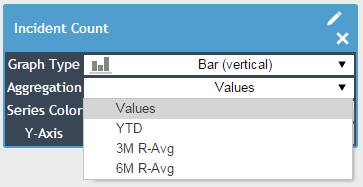
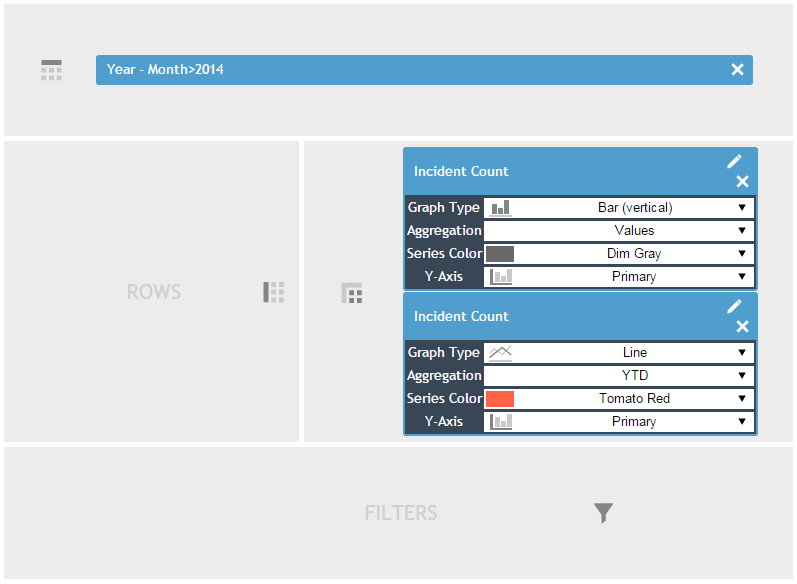
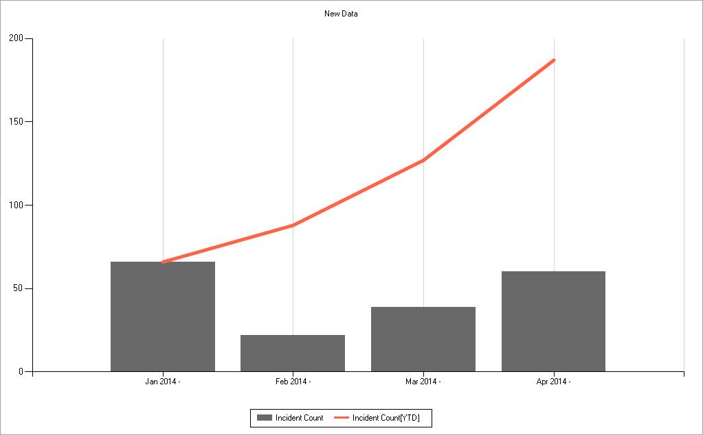

Measures in the Data Cube support simple aggregation calculations. You can switch between different aggregations using the measure's Aggregation property. Aggregations only work correctly when the months of the time dimension are expanded.

YTD allows the measure to be displayed as a year-to-date value.
3M/6M/12M R-Avg allows the measures to be displayed as 3-, 6-, or 12-month rolling averages.
This configuration:

Will generate this:
